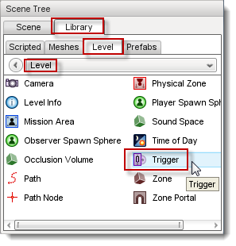
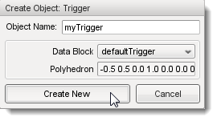
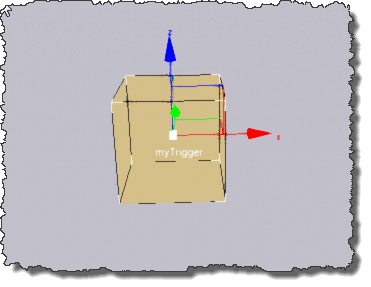
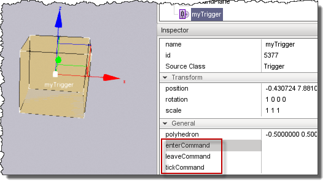
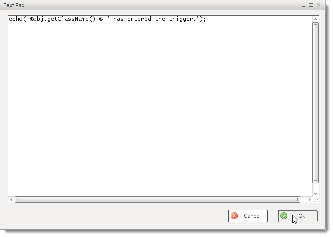
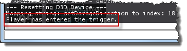
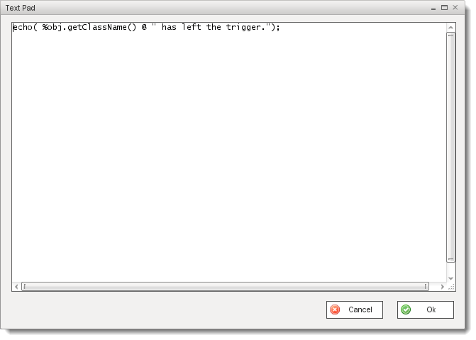
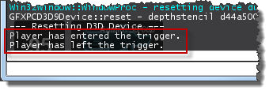

Introduction
Triggers are very useful for causing all types of events to occur in your games. They can be used to trigger explosions as the player nears a dramatic fight, or to open doors and
gates as the player approaches. They can be used to spawn AI units so that the system doesn't have to process them while they wait for the player.
Creating Triggers
Triggers are created through the Object Editor. With the Object Editor open, select the Library tab, then select the Level sub-tab.

Open the Level folder and double-click the Trigger icon to open the Create
Object: Trigger dialog. Enter a name for your trigger, select a source datablock and click
Create New.

You should be staring at a fresh, new trigger:

Using Triggers to Cause Events
Now that you have a trigger in your level you will need to do some scripting to get it to handle its events. This can be accomplished in one of two ways. You can create
your event callback functions in the editor by using the enterCommand,
leaveCommand and tickCommand fields in the
General tab of the Object Inspector or you can manually write the
callback functions in script.
Using the Object Inspector Fields
You can directly enter your scripts for your trigger events in the fields provided by clicking in the field.

A text editor will pop up for you to use. Note that the event fields are limited to 1024 characters, so if your event script is going to be longer you will have to edit the script using an outside editor.

Note that the trigger assigns the object that initiates the callback to the
%obj local variable. In the above script the class name of the entering object will be echoed to
the console when it enters the trigger. Once you are finished entering code, click
OK. Here is the console output you should see when
a Player enters the trigger:

Next, we can put similar code in the leaveCommand field to tell us when an object exits the trigger.

Now, when a Player enters and then exits the trigger the output should look something like this:

The tickCommand is fired on the trigger's tick cycle, as set in the trigger type datablock. The
defaultTrigger datablock defines its tick frequency at 100 ms. Because this callback
is called repeatedly, try not to do any heavy lifting here.
As long as you're not doing anything overly complex you should be fine using the trigger's event fields to handle trigger events. If you need more room, you can either write a script function
outside of the Text Pad editor and call it from your event callback or you can write the entire callback in an outside editor.
As a point of interest, code entered in the event fields is written to the level
file that contains the trigger.
A point to keep in mind is that callbacks entered directly in a trigger's event fields only affect that specific trigger. Callbacks written for the trigger's datablock affect all triggers that use the
same datablock.
Using Trigger Callbacks to Cause Events
The following is taken directly from the DefaultTrigger datablock callback code:
//-----------------------------------------------------------------------------
// DefaultTrigger is used by the mission editor. This is also an example
// of trigger methods and callbacks.
function DefaultTrigger::onEnterTrigger(%this,%trigger,%obj)
{
// This method is called whenever an object enters the %trigger
// area, the object is passed as %obj.
}
function DefaultTrigger::onLeaveTrigger(%this,%trigger,%obj)
{
// This method is called whenever an object leaves the %trigger
// area, the object is passed as %obj.
}
function DefaultTrigger::onTickTrigger(%this,%trigger)
{
// This method is called every tickPerioMS, as long as any
// objects intersect the trigger.
// You can iterate through the objects in the list by using these
// methods:
// %trigger.getNumObjects();
// %trigger.getObject(n);
}
To get the behavior we defined on our trigger in its event field to work on all DefaultTrigger-derived triggers we could place our
event script code into the DefaultTrigger::onEnterTrigger() and DefaultTrigger::onLeaveTrigger() functions. As you can see, in
the default onTickTrigger() callback there is code that is commented out that you could use to get the object count within
the trigger every tick.
Again, note that any code you put in these callbacks will be called for every trigger that derives from this datablock (or any
custom datablock that you may define later).
Conclusion
You should now have a general understanding of basic trigger creation through the editor and the purpose of the event fields and callback functions. With
this knowledge you can script many different sorts of events and effects within your levels.
|